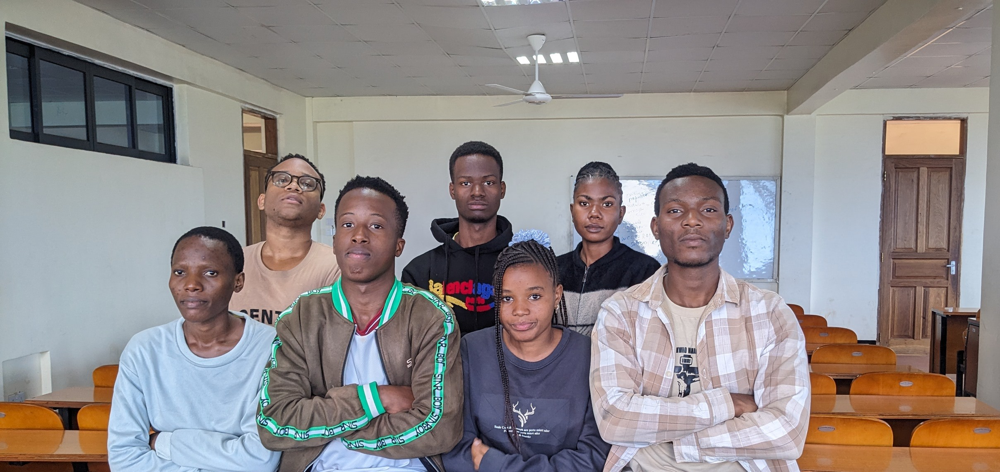
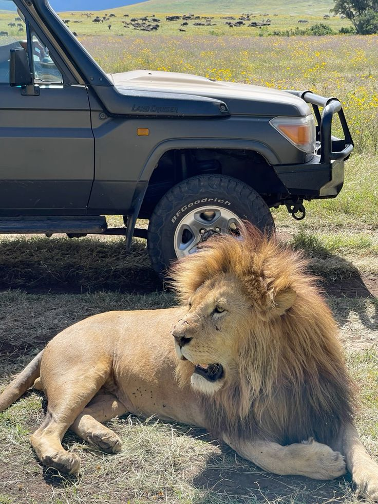
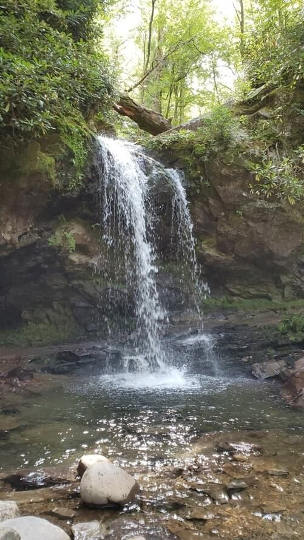
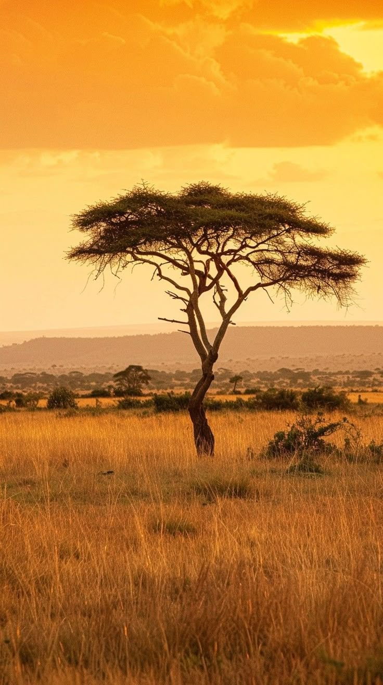

About Us
Welcome to Jujomond Safaris – Where Adventure Meets Nature!
At Jujomond Safaris, we are passionate about connecting people to the wild beauty of Africa. Founded with a deep love for nature and a strong commitment to responsible tourism, our company has grown to become one of the most trusted safari operators in the region.
We specialize in organizing unforgettable safari experiences across East Africa, including Kenya, Tanzania, Uganda, and Rwanda. Whether you're dreaming of witnessing the Great Migration, tracking gorillas in misty mountains, or exploring the untouched wilderness of the Serengeti, we make those dreams a reality.
üåü Why Choose Jujomond Safaris?
- Expert Guides: Our local guides are experienced, knowledgeable, and passionate about wildlife and conservation.
- Customized Tours: We design tailor-made safaris that match your interests, budget, and travel goals.
- Eco-Conscious Travel: We are committed to sustainability and support conservation projects and local communities.
- Safety & Comfort: We prioritize your safety and provide top-notch accommodation and transport.
üß≠ Our Mission
To inspire, educate, and connect people through immersive wildlife experiences that promote conservation and support local cultures.
üåç Our Vision
To be a leading eco-tourism company in Africa, delivering exceptional safari experiences while preserving the natural heritage for future generations.